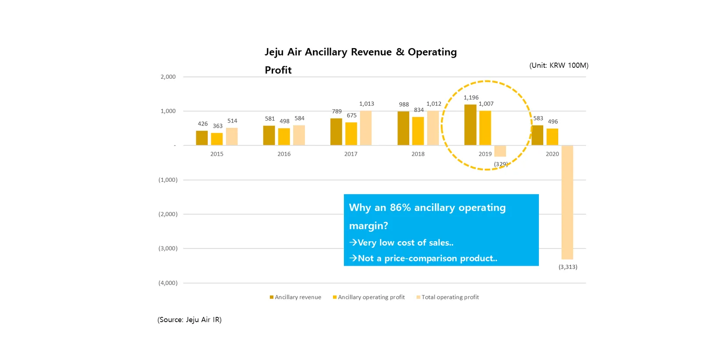

Why ancillaries

- Low cost of sales. Seats and baggage space already exist.
- Not a price-comparison product. No race to the lowest fare.
- Little marketing cost. Offered right to travelers who have just bought a ticket.
How the money flows
- A traveler buys ancillaries on the seller's screen (agency or OTA), with the ticket or after ticketing.
- ALLWIN AIR processes the payment and passes the order to the supplier (airline or ancillary provider).
- The supplier earns revenue from a new channel; the seller earns a sales commission.
- ALLWIN AIR earns a fee for integration, operation, CS and settlement; sellers carry almost no development or operating cost.
Commission rates and other terms are set in each partner agreement.
Everyone wins (ALLWINOMICS)
Suppliers (airlines, ancillary providers)
Before: ancillaries sold only on their own sites
→ Reach the agency channel that sells 70–90% of tickets; extra revenue without integrating each seller
Sellers (agencies, OTAs, platforms)
Before: only a small incentive on ticket sales
→ A new revenue stream from ancillary commission, with no development, CS or settlement burden
Travelers
Before: ancillaries only on airline sites or at the airport
→ One-stop purchase where they booked, preferred seats secured early, less time at the airport
| Who | Cost saving | Time saving | Revenue growth |
|---|---|---|---|
| Travelers | Up to about 30% cheaper than at the airport | Preferred seats secured early, less airport waiting | — |
| Sellers | About 1/8 the resources of direct airline integration | No development, CS or settlement burden | New revenue from ancillary commission |
| Suppliers | About 1/20 the resources of direct agency integration | No seller-management burden | Added revenue from the agency channel |
Estimates assuming 8 Korean airlines and 20 agencies; discounts vary by airline and product (from our 2021 partnership deck).
More connections, more revenue
Once a seller is connected, new suppliers and products keep being added. Sellers get more to sell without new development; suppliers gain more sellers without new sales effort. As ALLWIN AIR's services expand, partners' profitability keeps rising. See our expansion →
Frequently asked questions
- How do sellers (agencies) earn?
- When a traveler buys an ancillary on the seller's screen, the seller earns a sales commission — a revenue stream separate from ticket incentives. Terms are set by agreement.
- What do suppliers (airlines) gain?
- Ancillary sales extend beyond their own website to agencies and OTAs, without integrating each seller and with less seller-management, CS and settlement work.
- Are there costs for partners?
- ALLWIN AIR earns when sales happen, so partners carry little upfront development or operating cost. Details are shared during partnership discussions.
Start integrating with ALLWIN AIR
Airlines and ancillary suppliers, as well as travel agencies, OTAs and travel platforms, can all start with a single integration. We agree on the integration model and schedule to fit each partner.